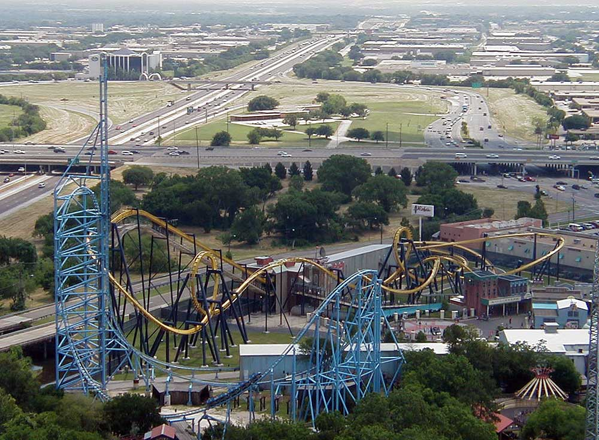

arlington
Welcome to arlington
Welcome to arlington


| Attractions | Notes |
|---|---|
| Batman: The Ride | Is the only inverted roller coaster in the park. Trains were reversed for a limited time in 2014. |
| Batwing | |
| Catwoman Whip | |
| Mr. Freeze: Reverse Blast | Originally intended to open for the 1997 season, but problems with the LIM Launch system forced a delayed opening. Trains were reversed and ride renamed to Mr. Freeze: Reverse Blast in 2012. |
| The Joker | |
| The Riddler Revenge |